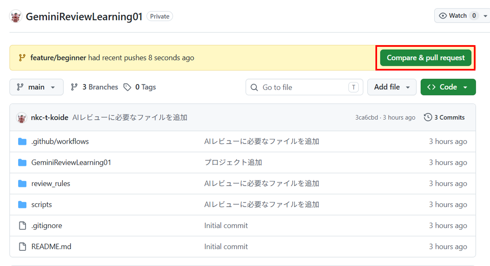

1
Compare & pull request ボタンを確認する
feature/beginner ブランチをpushすると、GitHubのリポジトリ画面に Compare & pull request ボタンが表示されることがあります。
このボタンからPull Request作成画面へ進めます。
補足： ボタンが表示されない場合は、上部の「Pull requests」タブから新しくPull Requestを作成しても構いません。

feature/beginner をpushすると、GitHub上に Compare & pull request ボタンが表示されます。